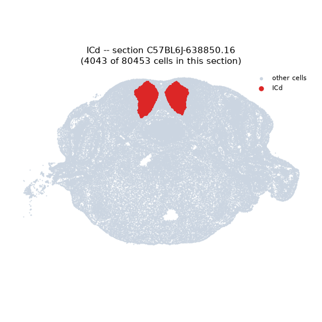
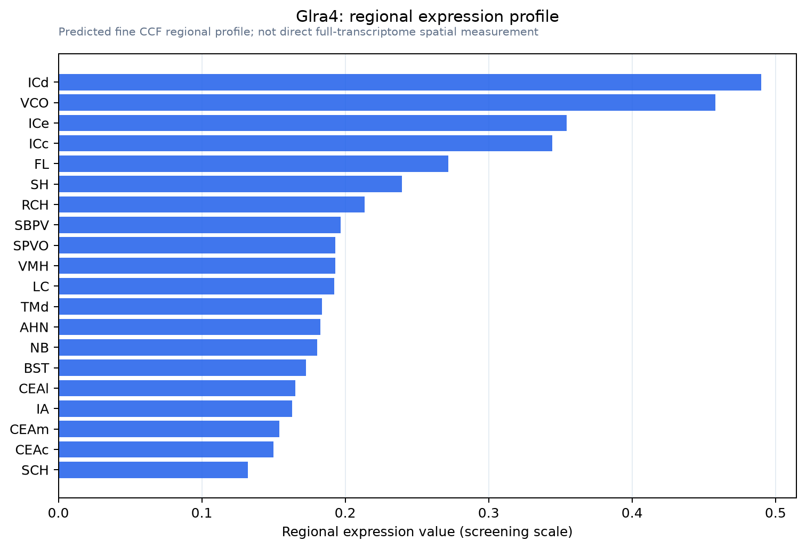

Glra4
Glycine receptor subunit alpha-4
Spatial tier: RESTRICTED · Class: ION_CHANNEL · Top region: ICd (Inferior colliculus, dorsal nucleus) · Positive regions: 22/554
44.7Discovery Score
36.7Targetability Score
CEvidence grade C
What this means: Glra4: fine CCF profile is restricted toward ICd (top regions: ICd, VCO, ICe, ICc, FL; 22 positive regions); direct spatial validation is still required.
Direct spatial evidence
MERFISH REGION LOCATOR

Regional expression figure

Predicted WMB × fine-CCF profile; not direct full-transcriptome spatial measurement.
Spatial profile
Evidence and specificity
- Evidence status
- PREDICTED_FINE
- Direct sources
- None; predicted localization only
- Exclusive threshold
- 12 positive regions out of 554
- Spatial specificity
- 0.312
- Top-region fraction
- 0.058
- Filter status
- PASS
Interpretation limits
- Cell-type-to-region projection is imputed expression, not direct spatial measurement.
- Adult reference atlases do not establish stability across age, sex, strain, state, or disease.
- Transcript abundance does not guarantee protein abundance or genetic-tool performance.